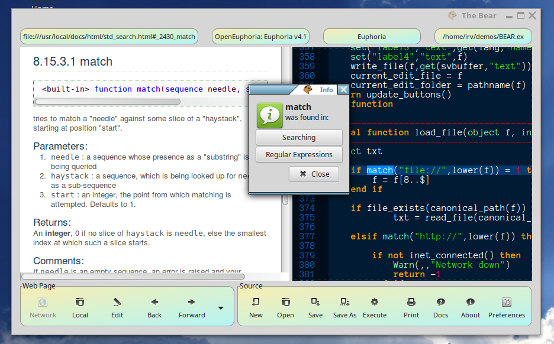

The sourcecode editor does not automatically 'track' the current web page being viewed. If you want to edit the current web page .html, you must click on the Edit button in the toolbar!
The BEAR is a web-browser, html editor, and Euphoria source-code editor with test-run capability.
To open a local file (.html or otherwise), click the Local button. In most cases, the file type will be automatically recognized and placed into the appropriate window.
To open a page from the web, click the Network button. A dialog box will appear for you to type in a web address: http://OpenEuphoria.org, for example. This button will be disabled if you are not on a network.
New with EuGTK 4.15.0: Print to PDF button added to the webview toolbar.
The sourcecode editor does not automatically 'track' the current web page being viewed. If you want to edit the current web page .html, you must click on the Edit button in the toolbar!
New with EuGTK 4.15.0: Fonts button added to the sourceview toolbar.
Click New or Open to create or edit a text file (Euphoria source code, for example). If the file extension is .ex, then the Execute button in the Source toolbar will be enabled; clicking on it will run a temporary copy of the program in the Source pane. If you are satisfied with the way the temporary copy ran, just click on the Save or SaveAs buttons to write the updated code to disk.
Don't forget - any editing you do to Euphoria source code will only change the temporary test copy, not the original, in case your change didn't work. To save your updated code, click on the save button!
The Execute button will be disabled if the code being edited is not a Euphoria program, but the Save and SaveAs buttons will function to save text, including .html, .css, or any other text that you may have modified. If the file is .html, then the WebView will be reloaded to show the updated web page.
Options for the source code editor are:
 Highlight a Euphoria keyword or GTK widget name, and click on the Docs button. The appropriate html help page, if found, will be displayed in the left-hand viewer.
SearchingIn order to more easily edit web pages, you can highlight words or a phrase in the web view, and select 'copy' from the right-click pop-up menu. Then click on the Find button in the Web Page control panel. This will try to scroll the editor pane to find the matching word(s).
Avoid clicking on text that includes markup, such as italics or bold, as those contain invisible markup which won't match when doing a text search. Neither will escaped characters such as & < >, etc., or items containing hidden text such as links.
This scheme doesn't always work perfectly, (sometimes not at all; try clicking on the find button again), but it's certainly better than nothing! If you know of a better way, please let me know!
BugsSometimes, when test-running a program from within the BEAR editor, you'll get an error about not finding GtkEngine.e or other includes. If so, just click the Save button and try the Execute button again.